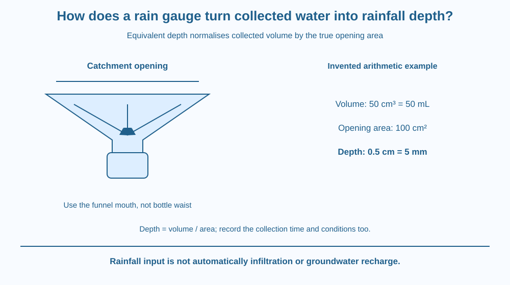

Convert collected rainwater volume into an equivalent rainfall depth using a known catchment area. Distinguish the gauge opening from the collection bottle, and recognise why placement, losses and the observation interval matter to a useful rainfall record.
Two rain gauges collect different volumes during the same shower. One has a wider opening. Does its larger collection prove heavier rain fell at that location? Not without accounting for area.
Rainfall depth expresses how much water would cover a level area if it stayed there uniformly without losses or movement. Dividing collected volume by the relevant opening area makes different-sized gauges comparable in a simplified model.
The key question is therefore not only how many millilitres were collected, but how much horizontal area supplied them during what interval.
A rain gauge catches water through a defined catchment opening. Ideally that opening has a known area, is suitably oriented and collects a representative sample of falling rain. The water may then enter a narrower bottle or measuring system.
The basic geometric relation is depth = volume / area. Volume has units of length cubed, and area length squared, leaving a length. Consistent units are essential before converting the result into millimetres.
For an invented example, a 100-square-centimetre opening collects 50 cubic centimetres of water. The equivalent depth is 0.5 centimetres, or 5 millimetres. One cubic centimetre is one millilitre, but that equivalence does not remove the need to divide by opening area.
If the same rainfall depth falls into twice the catchment area, twice the volume is expected in the ideal model. The depth remains the same. This is why a collection bottle's liquid height alone may not equal rainfall depth when a funnel concentrates water into it.
The observation interval is part of the measurement. A total collected over an hour is not directly comparable to a total collected over a whole day without describing those periods. Rainfall total and rainfall rate answer related but different questions.
Real gauges can lose or gain water through processes outside the ideal model. Wind can affect catch, splash can enter or leave, and evaporation can reduce a delayed reading. An obstructing roof or tree can change what reaches the opening.
Placement and level orientation therefore matter. A gauge tilted or sheltered inappropriately may not represent the intended rainfall even if its volume scale is read perfectly. Careful arithmetic cannot repair unrepresentative collection conditions.
A measured rainfall depth does not state how much enters the soil or reaches an aquifer. Runoff, interception and infiltration change the water's later path. The gauge measures precipitation input at a place and interval, not every subsequent part of the water budget.
Draw a rectangular layer of water above a known flat area. Its volume equals base area multiplied by depth. Turn that relation around to recover depth from volume and area.
Then draw a wide funnel above a narrow bottle. Keep the catchment area at the funnel mouth, not the bottle's waist. This prevents the common error of using the convenient visible container diameter instead of the area that actually intercepted the rain.
Compare two openings with different areas receiving the same illustrated depth. Their volume blocks differ, but division by each proper area restores the same depth. The model shows what the normalisation accomplishes.
The SVG shows a catchment opening, collection container and a separate depth-equals-volume-over-area panel. The invented 100-square-centimetre and 50-millilitre example gives a 5-millimetre depth.
A comparison doubles opening area and collection volume while preserving the ideal rainfall depth. Labels distinguish opening area from the narrower receiving bottle's area.
The diagram is an arithmetic and collection model. It does not depict a real shower, prescribe an official gauge installation or imply that rooftop and open-ground collections are automatically interchangeable.

Indian weather reports often express rainfall in millimetres. That unit represents an equivalent depth, allowing comparison more meaningfully than an unexplained bottle volume.
A school rainfall project should record location, opening geometry, reading times and unusual collection conditions. A tree drip or roof outlet can produce a different input from direct open rainfall, so it belongs in the method notes rather than being silently treated as equivalent.
No one should go out during a storm to read a gauge. Safe adult-managed placement and later observation are separate from understanding the calculation, which can be learned entirely from paper examples.
Use paper, a ruler and a calculator if desired. No outdoor collection is required.
State that the data are invented. The arithmetic does not establish actual rainfall at your school. Add a note naming one collection error that would remain even if every calculation were correct. This keeps the physical measurement and numerical conversion linked but distinct.
Why can two gauges show different collected volumes yet agree on rainfall depth? Use their opening areas in your answer.
Now imagine the bottle's narrow height scale is read directly as rain depth despite a much wider funnel mouth. What has been overlooked? Explain why identifying the collection geometry belongs before arithmetic, not after an implausible result appears.
How is equivalent rainfall depth calculated in the ideal model?
Answer: A — Volume divided by the area that intercepted the rain gives equivalent depth.
Why can a wider opening collect more volume in the same shower?
Answer: C — The same depth multiplied by a larger catchment area gives a larger volume.
Invented volume is 50 cm³ over 100 cm². What depth results?
Answer: B — The quotient is 0.5 cm, which equals 5 mm.
Design a rain-record sheet with opening area, collected volume, units, time interval, calculated depth and collection notes. Use one invented calculation and one example of an obstruction or loss.
Include a safety note that readings are not taken during storms. Your sheet should not claim that rainfall depth alone measures groundwater recharge or that a container under a roof outlet measures the same thing as direct rainfall through a known open catchment.
Millimetres of rain can describe a large total volume when spread over a large area. The depth is a normalised measure, not a statement that only a tiny amount of water existed. Understanding the area relation links a local gauge reading with a broader water-input calculation without inventing any actual rainfall statistic.
Rainfall depth equals collected volume divided by the true catchment area in consistent units; placement and observation interval remain part of the measurement.